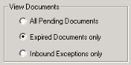
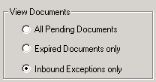

OR
OR

OR
|
If this field is empty or incorrect… |
|
|---|---|
|
Encounter |
The system was unable to find a matching encounter number in the ProdName-here system. See instructions for “Correcting the encounter number or MRN.” |
|
MRN |
The system was unable to find a matching MRN in the system. See instructions for “Correcting the encounter number or MRN.” |
|
Facility |
Clickthe drop-down box beneath this field to display a list of facility codes and select the facility code you want to associate with this document. |
|
Document |
Clickthe drop-down box beneath this field to display a list of valid document types. Select the document type you want to associate with this document. |
|
Subtitle |
Enter the subtitle you want to associate with this document. This field cannot be blank. Note: Dates entered as numbers (such as 01/02/2010) will not sort in chronological order in OneContent . |
OR
The Index Correction Utility saves your entries and resets the ‘Expired’ field to ‘0’ and the Counter to ‘0.’ (Index Upload attempts to upload the document during the next iteration of the retry interval.)
The system then displays information for the next available document.
If no more documents exist, the system updates the window status bar:

The system also displays one of the following prompts, depending on whether you are viewing expired documents or inbound exceptions:
| - | No more EXPIRED documents. Review PENDING documents (No to exit)? |
| - | No more INBOUND documents. Review PENDING documents (No to exit)? |